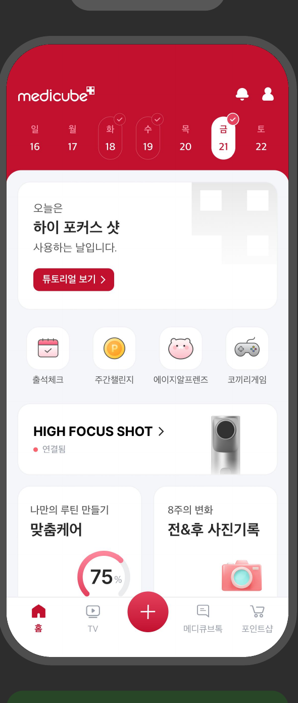
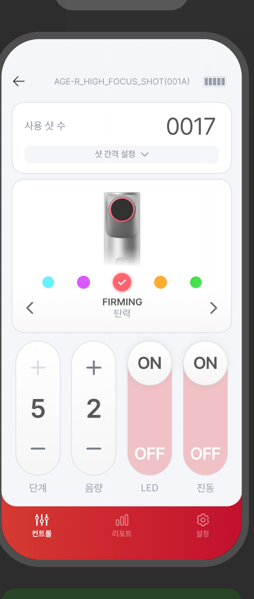
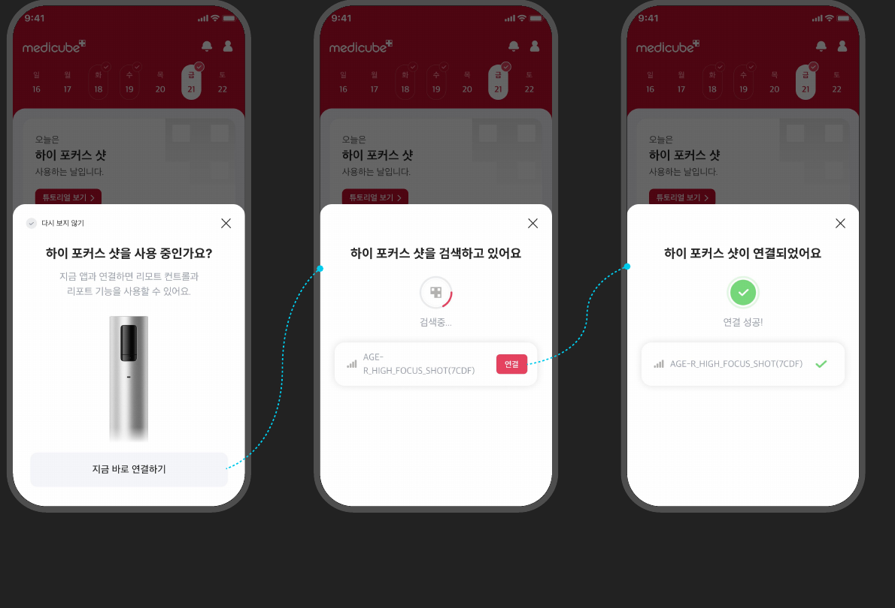
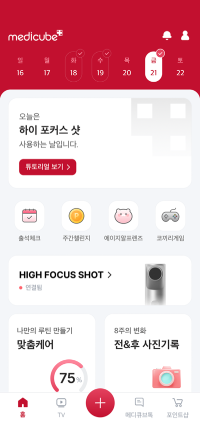
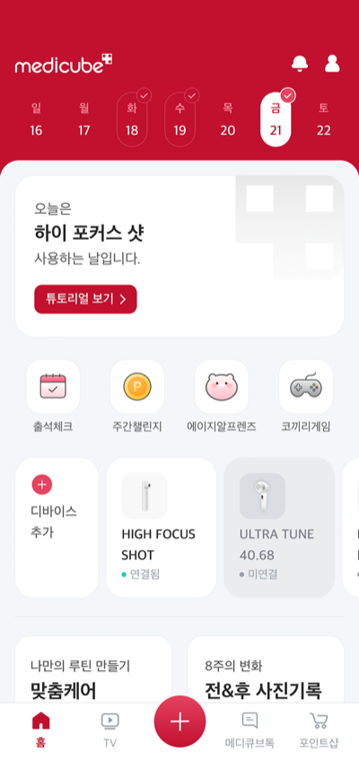
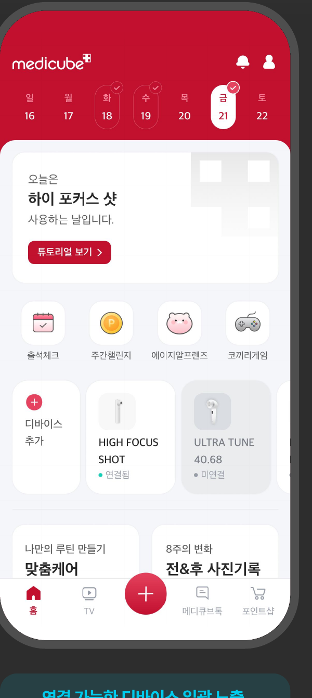

뷰티 디바이스 신규 출시로 처음 도입된 블루투스 연동 기능을 기획·디자인. 출시 후 발견된 오인지·CS 문제를 자동 인식과 1뎁스 컨트롤로 재설계해 두 차례에 걸쳐 개선했습니다.


신규 뷰티 디바이스 출시로 처음 도입된 기능이라 4050세대 중심 고객이 설명 없이도 바로 쓸 수 있어야 했습니다. 디바이스 등록자 중 실제 연동을 사용하는 비율은 약 45%에 그쳤고, 여러 대를 가진 고객은 배너가 하나만 노출돼 기존 연결을 해제하고 다시 등록하는 일을 반복했습니다.
한 화면 노출형 레이아웃 선호 65%
LED 상태 직관적 표현 긍정 응답 80%
만약:
그러면:
자동연동 오인지로 인한 CS 문의가 줄고, 등록자 중 실제 연동 사용률이 오를 것

만약:
그러면:
배너 하나로 인한 반복 해제·재등록이 줄어들 것

AS-IS · 배너 하나만 노출

TO-BE · 전체 목록 노출
주변에 전원이 켜진 디바이스가 있으면 자동으로 인식해 바텀시트로 연결을 제안.
연결 가능한 디바이스를 홈에서 전체 목록으로 노출. 여러 대를 등록해도 배너 하나로 막히지 않음.

이미 연결된 디바이스는 목록에서 한 번의 진입으로 바로 제어 화면 도달.
"확인"이 목적인 문안과 "연결"이 목적인 문안을 구분해 다음 행동을 명확히 안내.
연동이 어려운 이유가 '기능이 없어서'가 아니라 '설명이 없어서'라는 걸 사용성 테스트로 확인한 뒤, 자동 인식과 1뎁스 컨트롤로 두 차례에 걸쳐 문제를 좁혀갔습니다.
해제 후 재등록 비율도 눈에 띄게 줄었습니다(정확한 수치는 별도 집계 필요).
몰라서가 아니라, 먼저 물어보지 않아서 생긴 문제였습니다.
1차 사용성 테스트에서 연동 실패 원인이 "기능 부족"이 아니라 "설명 부족"임을 확인했습니다.
"LED가 메인 정보인데 화면에서 덜 강조돼 있다"는 1차 피드백(11건)은 2차 개선 후 해소 여부가 확인되지 않아, 다음 라운드 과제로 남겨뒀습니다.
연동이 어려운 이유는 기능이 없어서가 아니라, 설명이 없어서였습니다.
→ 기능을 더하지 않고 자동 인식 + 1뎁스 컨트롤로 뎁스를 줄이는 방향이 더 효과적인 해법이었습니다.
신규 기능 도입 시 주어진 과업에 집중하는 것도 중요하지만, 앞으로의 서비스 확장성과 회사의 핵심 사업 방향까지 고려하며 다양한 시각으로 UX/UI를 설계해야겠다는 인사이트를 얻었습니다.